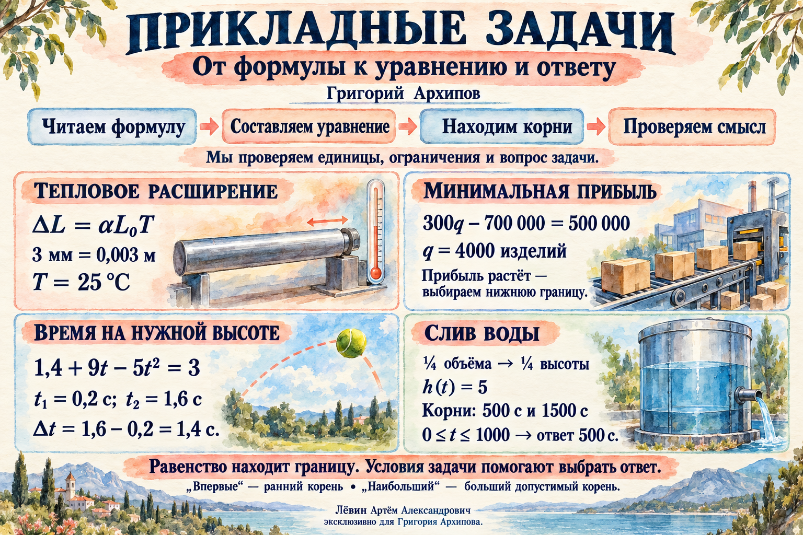

Наглядная памятка к занятиюОткрыть
Короткая карта идей: что считать, где искать границу и почему один из корней иногда приходится отбросить.

01
Чтение условия
Сначала смысл, затем вычисления
Формула уже задаёт математическую модель. Ваша задача — понять обозначения, единицы, допустимый диапазон и то, какую величину требует вопрос.
Аргумент и значениеh(t) — высота в момент t; скобки обозначают зависимость.
Единицы3 мм = 0,003 м = 3·10−3 м.
ОграниченияНапример, время t ≥ 0, количество изделий — целое.
Уровень отсчётаСтена 14 м и ещё 1 м сверху означают высоту 15 м.
Тепловое расширение
L(T)=L₀(1+αT), L₀=10 м, α=1,2·10−5 °C−1
Для удлинения на 3 мм: L−L₀=0,003. Тогда αL₀T=0,003 и T=25 °C.
Проверка масштаба. При переносе степени десяти коэффициент меняется обратно: 1,2·10−5 = 12·10−6.
02
Порог
Границу удобно искать через равенство
Слова «не менее», «не более», «впервые», «наибольший» определяют, как интерпретировать найденные значения после решения уравнения.
| Фраза | Запись | Что важно |
|---|
| не менее A | f(x) ≥ A | граница включена |
| не более A | f(x) ≤ A | граница включена |
| больше / меньше A | f(x) > A / f(x) < A | граница исключена |
| ровно A | f(x)=A | решаем уравнение |
Прибыль
Минимальное целое количество
Π(q)=q(p−v)−f
При p=600, v=300 и f=700 000 получаем Π(q)=300q−700 000. Для прибыли не менее 500 000 граница задаётся равенством и даёт q=4000.
Если граничное значение равно 1666⅔, минимальное целое количество — 1667.
Изменение значения
Вычитаем два состояния
Δh=h(0,6)−h(0,4)=5(0,6²−0,4²)=1 м
Для нелинейной функции f(t₁)−f(t₂) обычно не равно f(t₁−t₂). Подстановка 0,2 с дала бы ошибочные 0,2 м.
03
Квадратное уравнение
Получить все корни — только половина решения
После вычислений начинается содержательная часть: определить, какой корень отвечает вопросу и допустим ли он для процесса.
Уберите числовые знаменатели. Умножьте каждое слагаемое на общий кратный знаменателей.
Приведите к ax²+bx+c=0. Проверьте знаки коэффициентов.
Вычислите D=b²−4ac и найдите все действительные корни.
Отберите ответ. Учитывайте слова «впервые», «наибольшее», диапазон времени и физический смысл.
Камень над стеной
15 = −x²/160 + 7x/8 ⇔ x²−140x+2400=0
D=10 000, поэтому x₁=20 и x₂=120. Оба значения дают высоту 15 м. Если требуется наибольшее расстояние, выбираем 120 м.
Проверить отбор корня в лаборатории →
Нагреватель
T(t)=1400+200t−10t², T=1760 ⇒ t²−20t+36=0
Корни: 2 и 18 минут. Для отключения при первом достижении опасной температуры выбираем 2 минуты.
Интерактив
Почему выбран именно этот корень?
В лаборатории можно пройти четыре исходных сценария и для каждого самостоятельно выбрать допустимый корень или продолжительность.
Открыть сценарий нагревателя →
04
Область применимости
Математический корень может не описывать процесс
Формула действительна только в заданном диапазоне. Продолжение графика за границу процесса иногда создаёт формально верные, но предметно недопустимые решения.
Слив воды из цилиндрического бака
h(t)=20(1−t/1000)², 0≤t≤1000
Четверть начального объёма для вертикального цилиндрического бака означает четверть высоты: h=5 м. Уравнение даёт t=500 и t=1500.
500 с — допустимо.
Значение лежит в диапазоне 0≤t≤1000.
1500 с — исключаем.
К этому моменту бак уже пуст; формула слива после t=1000 неприменима.
Доля объёма и доля высоты
V=Sh, V₀=Sh₀ ⇒ V/V₀ = h/h₀
Это работает для вертикального бака с постоянной площадью горизонтального сечения. Если площадь сечения меняется с высотой, нужна другая зависимость.
Проверить область применимости →
05
Промежуток
Два граничных момента превращаются в продолжительность
Сначала находим моменты достижения уровня, затем проверяем, где условие выполняется, и только после этого вычисляем длину промежутка.
Мяч на высоте не менее 3 м
h(t)=1,4+9t−5t², h(t)=3 ⇒ t₁=0,2; t₂=1,6
Между 0,2 и 1,6 с парабола находится выше уровня 3 м. Продолжительность равна 1,6−0,2=1,4 с.
Сравнить моменты и продолжительность →
Метод интервалов как проверка
p(t)=(t−2)(t−6)
| Промежуток | (−∞;2) | (2;6) | (6;+∞) |
|---|
| Пробное число | 0 | 4 | 8 |
| Знак p(t) | + | − | + |
Следовательно, p(t)≤0 при t∈[2;6], а p(t)<0 при t∈(2;6). Недопустимые точки исключаются всегда.
Типичная ошибка. Не выбирайте корень выражения как пробную точку: там значение равно нулю и знак промежутка не определяется.
06
Путь А
10 задач + 3 прикладных сюжета
Условия полностью совпадают с тренировочным блоком текущего пособия. Ответы скрыты, чтобы сначала пройти маршрут самостоятельно.
01h(t)=5t². Найдите h(0,8).
Ответ
3,2 м.
L(T)=L₀(1+αT), L₀=8 м, α=2·10⁻⁵ °C⁻¹. При какой температуре удлинение составит 4 мм?
Ответ
25 °C.
Π(q)=300q−200 000. Найдите минимальное целое q для прибыли не менее 300 000 руб.
Ответ
1667 изделий.
h(t)=5t². До дождя 0,8 с, после дождя 0,6 с. На сколько поднялся уровень воды?
Ответ
1,4 м.
Решите x²/12 − x/2 = 4/3.
Ответ
x=−2; x=8.
T(t)=20+20t−t². При первом достижении 84 °C прибор отключается. Когда?
Ответ
4 мин.
y(x)=−x²/40+x, 0≤x≤40. Найдите наибольшее x, когда камень ровно на 1 м выше стены 6,5 м.
Ответ
30 м.
h(t)=10t−t², 0≤t≤10. Сколько секунд мяч находится на высоте не менее 21 м?
Ответ
4 с.
h(t)=16(1−t/400)², 0≤t≤400. Через сколько секунд останется четверть первоначального объёма?
Ответ
200 с.
T(t)=70+14t−t², 0≤t≤14. Когда температура не ниже 115 °C и какова продолжительность?
Ответ
t∈[5;9] мин; 4 мин.
Подводный зонд: T=ρgl³−mg, ρ=1000 кг/м³, g=10 Н/кг, m=25 кг. Максимальный l при T≤1000 Н?
Ответ
0,5 м.
Закон Стефана–Больцмана: P=σST⁴, где σ=5,7·10⁻⁸ Вт/(м²·К⁴), S=(1/228)·10²⁰ м², P≥1,5625·10²⁵ Вт. Найдите минимальную температуру T.
Ответ
5000 К.
Эффект Доплера: f(v)=f₀/(1−v/c), f₀=590 Гц, c=300 м/с. Минимальная скорость для различия частот на 10 Гц?
Ответ
5 м/с.